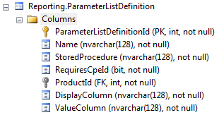
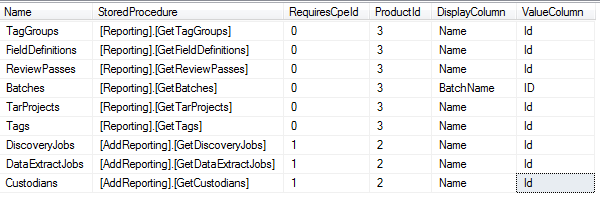

This table is linked to the ExecutionMetadata field of your ReportDefintion. It allows the execution of additional stored procedures in order to acquire a list of items to show the user, that is, when you want to allow user-input for your custom report, but want to restrict that input to a list of specific items. The schema is as follows:

Examples of common
list items include "Field Definitions" for
You can define
your own custom lists, but the default set provided with

Although inserting additional entries into the Reporting.ParameterListDefinition table is supported, it is unnecessary (and is discouraged) under most circumstances. The following details regarding this table are primarily for informational purposes, to allow you to better understand the ExecutionMetadata for creating Report Definitions.
The Reporting.ParameterListDefinition table works very similar to Report Definitions, but is less flexible and is not intended for extensive customization.
|
Field NAME |
DATA TYPE |
Description |
|
Name |
String |
The name of the parameter list. This is the field that you should specify within your ExecutionMetadata. |
|
StoredProcedure |
String |
The name of the stored procedure that returns the list of items. |
|
RequiresCpeId |
Boolean |
Specifies
whether or not this stored procedure requires the CaseProductEnvironmentId
that the user selected in the user interface. This should be 0
(false) in most cases, and is typically only necessary for |
|
ProductId |
String |
Refers
to the product to which your report will be available. This must be a value from
the |
|
DisplayColumn |
String |
Contains the name of the column in your dataset that contains the "Name" value as described next. The specified stored procedure should return a dataset with two columns. The DisplayColumn field refers to the column that contains the value to display to the user. This is typically a name of some kind, such as "Field Definition" or "Discovery Job". |
|
ValueColumn |
String |
Contains the name of the column in your dataset that contains the ID value as described next. The specified stored procedure should return a dataset with two columns. The ValueColumn field refers to the column that contains the value sent to the custom report stored procedure. This is typically just "ID", but could be something more specific, such as "BatchID". |
In the following
example, a custom report that uses a list
DisplayType is defined. The user will be able to select a single item
from a list of Data Extract Jobs and submit that item to the custom report.
The pre-defined DataExtractJobs list is used; see
{
"StoredProcedure": "UserDefinedReports.MyCustomReport",
"ParameterInfo": [
{
"Name": "DataExtractJobId",
"DisplayName": "Data Extract Job",
"DisplayType": "list",
"ParameterListName": "DataExtractJobs",
"IsOptional": true
}
]
}